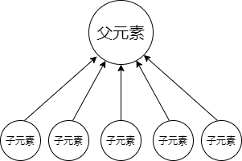
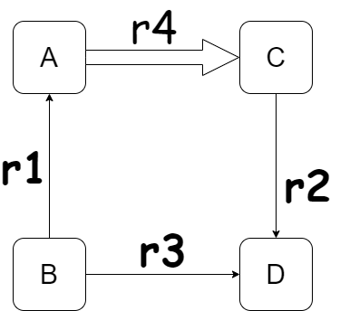

并查集
[TOC]
并查集&带权并查集
并查集简介
现给出n个元素，分属不同的集合，我们要进行以下两种操作：
- 给出两个元素的关系，满足这一关系的两个元素所属集合合并。（即：x，y是亲戚，则x的亲戚也是y的亲戚，于是x，y所处两个集合可以合并成为一个新的亲戚集合。即【x所在集合】与【y所在集合】合并）
- 已知两个元素，判断两个元素是否存在该关系。（即判断两个元素是否在同一集合中）
经典问题：亲戚组，食物链等。
并查集原理&实现
”集“
并查集主要通过树这一数据结构来实现。对于某一给定集合，我们任取其中的某个元素作为根结点，建立pre数组为每个元素的父结点，即使用树的双亲表示法。特别地，根节点的父节点为其本身。我们这样通过树的数据结构实现了元素之间关系构造，但是，我们并查集的目的是实现【并】与【查】的操作，那么如何进行实现呢？
“并”
假设我们已知两个元素A、B存在关系，他们分属集合 α 和 β ，所以我们现在要合并集合α 和 β 。如何实现？两个集合分属两颗树，我们现在要把两棵树合成一棵树，只需要将元素A的根结点的父节点指向B元素的根节点即可，反之亦可。也就是把α 和 β 两个集合的根节点建立父子联系，我们就很轻松的实现了【并】的操作了。
”查“
根据我们建立的集合的特点，两个元素要分属一个集合，判断集合的最明显的特征就是根节点，也就是说，如果两个元素的根节点相同，那么他们自然就分属一个集合了。那我们只需要查询两个元素的根节点，判断两个根节点是否为同一个根节点就OK了。于是现在的问题来到了如何查找根节点，其实运用递归的方法也很容易实现，我们递归访问该元素的父节点，不停向上访问，最后访问到结点的父节点是本身的时候就访问到了根节点了。判断两个根节点就能实现【查】的操作了
路径压缩
我们根据刚刚的讨论可以发现，并查集的操作的关键都是访问元素的根结点，而与其他元素如何联系就没有意义了，因此其时间复杂度取决于树的深度，如果一个树是斜树，或者类似斜树的形式，那么并查集的时间优化就几乎没有了。我们在并查集的时候于是我们寻找进行优化方式，最好能对树的深度进行缩短，尽量形成下图的形式，使得树的深度变成2，这样并查集的时间复杂度就会陡然下降。因此这里提出路径压缩的方法来优化树的结构。

路径压缩：我们在向上访问父节点时候，只需把经过的每个节的父结点都改成根节点，就能让树的形状尽量接近上图的形状。这种路径压缩可以大大优化树的结构，使得树的深度更小，使得时间复杂度在完全体情况下在O(1)时间复杂度就能找到根节点。并查集效率极度提高。
代码实现
用数组链表构造的树都可以实现并查集操作，这里我们都使用链表的形式实现（注意指针的使用）。
|
至此，并查集的实现就成功完成了，当然，并查集有时候并不是单纯的亲戚的亲戚是亲戚的关系，而可能存在关系权重的问题了，这个时候就需要使用加权的并查集了。
带权并查集
“权”
首先要弄明白的是，何为【权】。权，即为两个元素之间关系的一个度量值，一般已知两个元素关系的权值，和其中一个元素与另一个非这两个元素的关系权值，则可以求出这两个元素中的另一个与非这两个元素的关系权值，且满足向量关系。如下图：已知权值r1、r2，则通过向量法可以求出r3=r2+r1（可能要进行模运算），通常，这个向量一般是由子结点指向父节点。所以，在并查集带权的情况下，我们在find（路径压缩）和union时就需要做权重的转移。如，把C路径压缩至A则需要将权值从r2变为r3。这是路径压缩的权值转换方式。特别的，在进行find路径压缩时，由于父节点变为根节点，容易失去原来父节点权重，因此需要记录下父节点权重。

同时，合并集合也需要进行权值转换，这涉及根结点之间的权值转换。经过find的路径压缩，对于元素的根节点与该元素必然是直接相连的，因此权值转换就变成了下图形式。已知r1，r2和r3，现在要把A合并到C集合中，根据向量法，r4=r2+r3-r1，于是A->C的权值就求出了。

代码实现
|
至此，带权并查集的实现也就结束了。
下面介绍一道经典带权并查集的例题：
例题： [NOI2001] 食物链
题目描述
动物王国中有三类动物 A,B,C，这三类动物的食物链构成了有趣的环形。A 吃 B，B 吃 C，C 吃 A。
现有 N 个动物，以 1 － N 编号。每个动物都是 A,B,C 中的一种，但是我们并不知道它到底是哪一种。
有人用两种说法对这 N 个动物所构成的食物链关系进行描述：
- 第一种说法是
1 X Y，表示 X 和 Y 是同类。 - 第二种说法是
2 X Y，表示 X 吃 Y 。
此人对 N 个动物，用上述两种说法，一句接一句地说出 K 句话，这 K 句话有的是真的，有的是假的。当一句话满足下列三条之一时，这句话就是假话，否则就是真话。
- 当前的话与前面的某些真的话冲突，就是假话
- 当前的话中 X 或 Y 比 N 大，就是假话
- 当前的话表示 X 吃 X，就是假话
你的任务是根据给定的 N 和 K 句话，输出假话的总数。
输入格式
第一行两个整数，N，K，表示有 N 个动物，K 句话。
第二行开始每行一句话（按照题目要求，见样例）
输出格式
一行，一个整数，表示假话的总数。
输入输出样例
输入
|
输出
|
说明/提示
1 ≤ N ≤ 5 ∗ 10^4
1 ≤ K ≤ 10^5
首先分析思路：食物链构造正好满足向量关系，但是要取模，因此我们很容易想到可以用带权并查集来实现。
权重：
0：同类 1：捕食关系 2：被捕食关系
我们把向量置为父节点指向子结点，然后简单套模板即可。
AC代码如下：（太晚了注释以后有时间写吧0.0，这里用数组实现的）
|